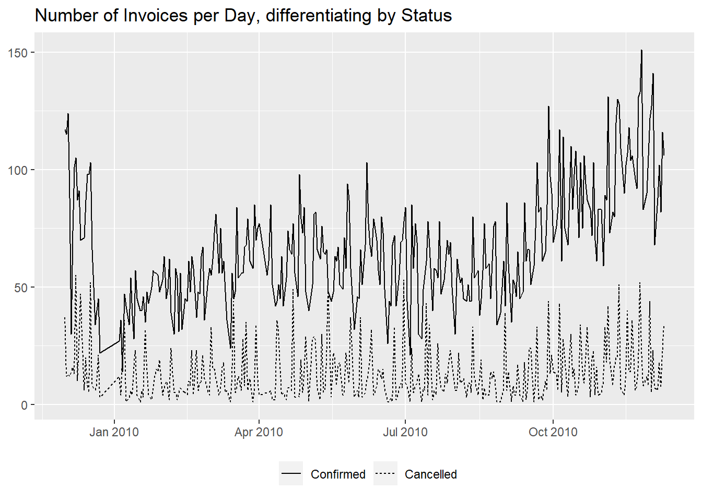
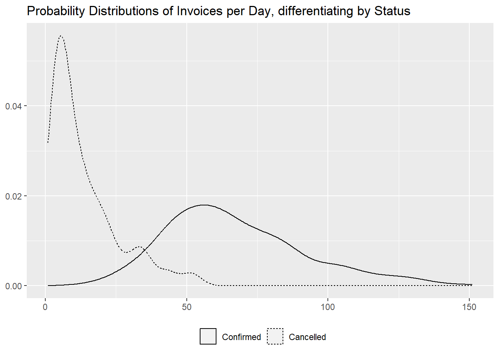
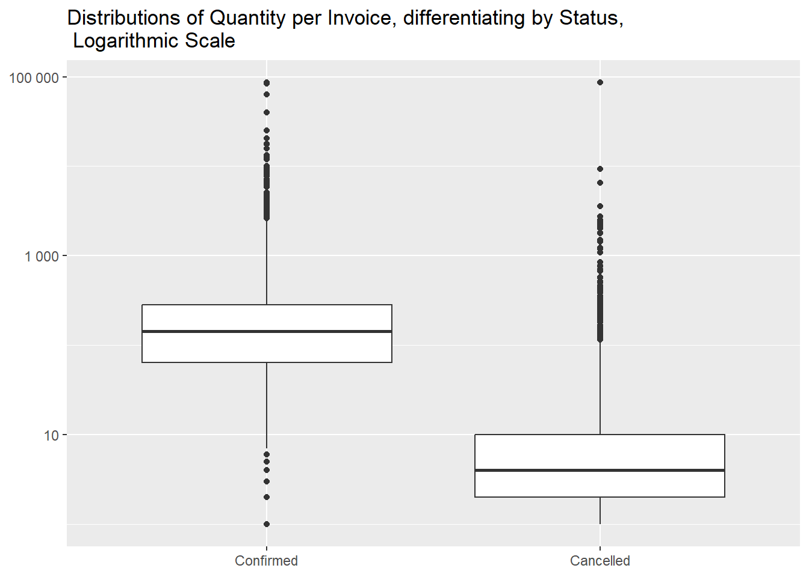
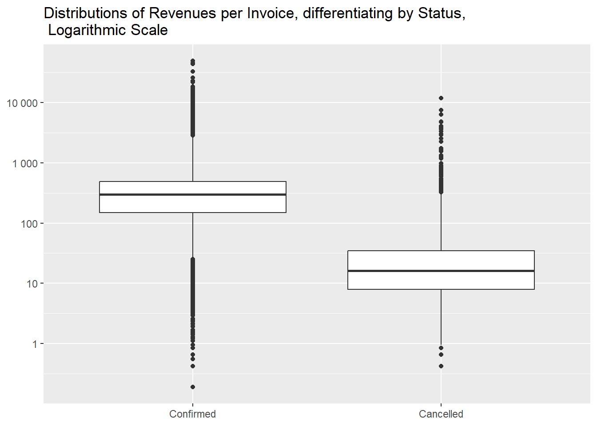
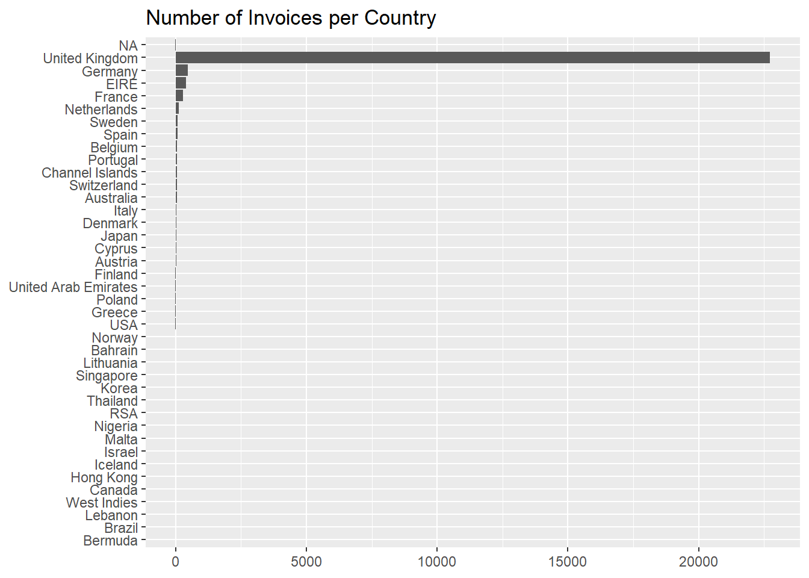
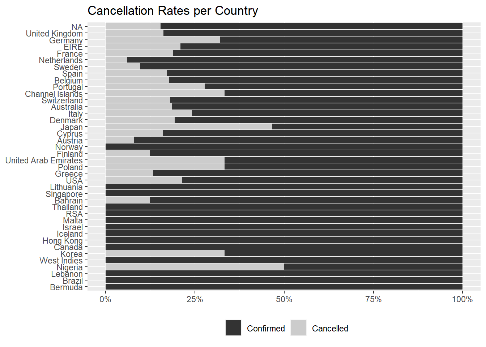

After having manipulated our data frame in the previous section of
the site, removing rows that are not pertinent transactions and
exploring missing values, duplication and limit cases, we will here
start to interrogate the data, using standard data analysis techniques,
with the goal to extract information that can be used for business
purposes.
- focus of this document
In this document we will investigate the invoices, with a focus on
the phenomenon of the cancelled ones. Cancelled invoices can be very
concerning as they represent lost sales so we will try to understand how
widespread they are and to quantify the lost revenues.
We decided not to remove duplicated
rows, as we prefer not to lose information about quantity even if
that might inflate the number of purchases.
- basic breakdown
We can begin by reminding their basic figures: how many there are and
how many of them have been cancelled.
df %>%
summarise("Total Number of Invoices" = n_distinct(Invoice),
"Number of Cancelled Invoices" = n_distinct(Invoice[str_starts(Invoice, "C")]),
Percentage = formattable::percent(`Number of Cancelled Invoices` / `Total Number of Invoices`))
We can then continue by showing the number of invoices per day,
differentiating by status.
df %>%
mutate(Status = if_else(str_detect(Invoice, "C"), "Cancelled", "Confirmed"),
InvoiceDay = as.Date(InvoiceDate)) %>%
group_by(InvoiceDay, Status) %>%
summarise("Number of Invoices per Day" = n_distinct(Invoice), .groups = "drop") %>%
tidyr::pivot_wider(names_from = Status, values_from = `Number of Invoices per Day`, values_fill = 0) %>%
relocate(Confirmed, .before = Cancelled)
library(ggplot2)
df %>%
mutate(Status = forcats::fct_rev(if_else(str_detect(Invoice, "C"), "Cancelled", "Confirmed")),
InvoiceDay = as.Date(InvoiceDate)) %>%
group_by(InvoiceDay, Status) %>%
summarise("Number of Invoices per Day" = n_distinct(Invoice), .groups = "drop") %>%
ggplot(aes(InvoiceDay, `Number of Invoices per Day`, linetype = Status)) +
geom_line() +
labs(x = NULL,
y = NULL,
title = "Number of Invoices per Day, differentiating by Status") +
theme(legend.position = "bottom",
legend.title = element_blank())

From the graph it seems like the cancelled invoices are staying
constant while the confirmed ones are on an upward trend.
We complete this section with the distribution of the number of
invoices per day, both with a table and with a graph, to show the
difference in magnitude between them.
df %>%
mutate(Status = if_else(str_detect(Invoice, "C"), "Cancelled", "Confirmed"),
InvoiceDay = as.Date(InvoiceDate)) %>%
group_by(InvoiceDay, Status) %>%
summarise("Number of Invoices per Day" = n_distinct(Invoice), .groups = "drop") %>%
tidyr::pivot_wider(names_from = "Status", values_from = "Number of Invoices per Day", values_fill = 0) %>%
reframe(across(where(is.numeric), ~ summary(.x))) %>%
mutate(Statistic = c("Min." , "1st Qu.", "Median", "Mean", "3rd Qu.", "Max.")) %>%
relocate(Statistic, Confirmed, .before = Cancelled)
df %>%
mutate(Status = forcats::fct_rev(if_else(str_detect(Invoice, "C"), "Cancelled", "Confirmed")),
InvoiceDay = as.Date(InvoiceDate)) %>%
group_by(InvoiceDay, Status) %>%
summarise("Number of Invoices per Day" = n_distinct(Invoice), .groups = "drop") %>%
ggplot(aes(`Number of Invoices per Day`, linetype = Status)) +
geom_density() +
labs(x = NULL,
y = NULL,
title = "Probability Distributions of Invoices per Day, differentiating by Status") +
theme(legend.position = "bottom",
legend.title = element_blank())

- number of distinct items
Then we want to investigate the differences in homogeneity and we can
see that cancelled invoices generally contain less distinct items.
df %>%
mutate(Status = if_else(str_detect(Invoice, "C"), "Cancelled", "Confirmed")) %>%
group_by(Invoice, Status) %>%
summarise("Number of Distinct Items" = n_distinct(StockCode), .groups = "drop") %>%
tidyr::pivot_wider(names_from = Status, values_from = `Number of Distinct Items`) %>%
#we didn't substitute NAs with O with `values_fill = 0` as it would incorrectly modify the summary table, adding values that don't exist
reframe(across(where(is.numeric), ~ summary(.x))) %>%
slice(-n()) %>%
#to remove the last line from the summary table, the one with NAs
mutate(Statistic = c("Min." , "1st Qu.", "Median", "Mean", "3rd Qu.", "Max.")) %>%
relocate(Statistic, Confirmed, .before = Cancelled)
df %>%
mutate(Status = forcats::fct_rev(if_else(str_detect(Invoice, "C"), "Cancelled", "Confirmed"))) %>%
group_by(Invoice, Status) %>%
summarise("Number of Distinct Items" = n_distinct(StockCode), .groups = "drop") %>%
ggplot(aes(Status, `Number of Distinct Items`)) +
geom_boxplot() +
scale_y_log10() +
labs(x = NULL,
y = NULL,
title = "Distributions of the Number of Distinct Items per Invoice, differentiating by Status, \n Logarithmic Scale")

- differences in quantity
We proceed analogously for the Quantity column,
calculating the total quantities for each invoice, in absolute values
(as cancelled invoices have negative ones).
df %>%
mutate(Status = if_else(str_detect(Invoice, "C"), "Cancelled", "Confirmed")) %>%
group_by(Invoice, Status) %>%
summarise("Total Quantity" = sum(abs(Quantity)), .groups = "drop") %>%
tidyr::pivot_wider(names_from = "Status", values_from = "Total Quantity") %>%
#we didn't substitute NAs with O with `values_fill = 0` as it would incorrectly modify the summary table, adding values that don't exist
reframe(across(where(is.numeric), ~ summary(.x))) %>%
slice(-n()) %>%
#to remove the last line from the summary table, the one with NAs
mutate(Statistic = c("Min." , "1st Qu.", "Median", "Mean", "3rd Qu.", "Max.")) %>%
relocate(Statistic, Confirmed, .before = Cancelled)
df %>%
mutate(Status = forcats::fct_rev(if_else(str_detect(Invoice, "C"), "Cancelled", "Confirmed"))) %>%
group_by(Invoice, Status) %>%
summarise("Total Quantity" = sum(abs(Quantity)), .groups = "drop") %>%
ggplot(aes(Status, `Total Quantity`)) +
geom_boxplot() +
scale_y_log10(labels = scales::label_number()) +
labs(x = NULL,
y = NULL,
title = "Distributions of Quantity per Invoice, differentiating by Status, \n Logarithmic Scale")

And we can see that cancelled invoices are, again, generally
smaller.
The same Max. value for both statuses piqued our
interest and we found out that three invoices share it.
df %>%
filter(Invoice %in% c("C524235", "518505", "524174")) %>%
count(Invoice, wt = abs(Quantity), name = "Total Quantity")
It is not by chance that it happened, as all three contain the same
items in the same quantities and two of them are made by the same
customer, very curious.
df %>%
filter(Invoice %in% c("C524235", "518505", "524174")) %>%
arrange(StockCode)
- differences in revenues
Besides being comprised of less distinct items and in smaller
quantities, cancelled invoices are of smaller absolute monetary value as
well.
df %>%
mutate(Status = if_else(str_detect(Invoice, "C"), "Cancelled", "Confirmed")) %>%
group_by(Invoice, Status) %>%
summarise("Total Value" = sum(abs(Quantity * Price)), .groups = "drop") %>%
tidyr::pivot_wider(names_from = "Status", values_from = "Total Value") %>%
#we didn't substitute NAs with O with `values_fill = 0` as it would incorrectly modify the summary table, adding values that don't exist
reframe(across(where(is.numeric), ~ summary(.x))) %>%
slice(-n()) %>%
#to remove the last line from the summary table, the one with NAs
mutate(Statistic = c("Min." , "1st Qu.", "Median", "Mean", "3rd Qu.", "Max.")) %>%
relocate(Statistic, Confirmed, .before = Cancelled)
df %>%
mutate(Status = forcats::fct_rev(if_else(str_detect(Invoice, "C"), "Cancelled", "Confirmed"))) %>%
group_by(Invoice, Status) %>%
summarise("Total Value" = sum(abs(Quantity * Price)), .groups = "drop") %>%
ggplot(aes(Status, `Total Value`)) +
geom_boxplot() +
scale_y_log10(labels = scales::label_number()) +
labs(x = NULL,
y = NULL,
title = "Distributions of Revenues per Invoice, differentiating by Status, \n Logarithmic Scale")

The total loss in revenues can be quantified to
247901.4 £, 2.46% over the hypothetical
revenues those invoices had not been cancelled.
df %>%
summarise("Total Revenues" = sum(abs(Quantity) * Price),
"Lost Revenues" = sum(abs(Quantity[str_starts(Invoice, "C")]) * Price[str_starts(Invoice, "C")]),
Percentage = formattable::percent(`Lost Revenues` / `Total Revenues`))
- country breakdown
Let’s look now at the number of invoices per country, where we see
that more than 9 invoices out of 10 pertain to
United Kingdom.
df %>%
count(Country, wt = n_distinct(Invoice), sort = TRUE, name = "Number of Invoices") %>%
mutate(Percentage = formattable::percent(`Number of Invoices` / sum(`Number of Invoices`)))
df %>%
count(Country, wt = n_distinct(Invoice)) %>%
ggplot(aes(reorder(Country, n), n)) +
geom_col() +
coord_flip() +
labs(x = NULL,
y = NULL,
title = "Number of Invoices per Country")

It is more interesting to see if some countries cancel invoices more
often than others,
df %>%
mutate(Status = if_else(str_detect(Invoice, "C"), "Cancelled", "Confirmed")) %>%
count(Country, Status, wt = n_distinct(Invoice), name = "Number of Invoices") %>%
group_by(Country) %>%
mutate(Percentage = formattable::percent(`Number of Invoices` / sum(`Number of Invoices`)),
Arranging_Column = sum(`Number of Invoices`)) %>%
#`Arranging_Column` is used to have the Countries with the highest total number of invoices on top
ungroup() %>%
arrange(desc(Arranging_Column), desc(Status)) %>%
select(-Arranging_Column)
and, among the 26 countries with cancellations, we can
spot Nigeria and Japan with fairly high rates,
but we have to consider that these two countries don’t have a elevate
number of invoices (just 2 for the former and
30 for the latter).
df %>%
mutate(Status = if_else(str_detect(Invoice, "C"), "Cancelled", "Confirmed")) %>%
count(Country, Status, wt = n_distinct(Invoice), name = "Number of Occurrences") %>%
group_by(Country) %>%
mutate("Number of Invoices" = sum(`Number of Occurrences`),
Percentage = formattable::percent(`Number of Occurrences` / sum(`Number of Occurrences`))) %>%
ungroup() %>%
filter(Status == "Cancelled") %>%
arrange(desc(Percentage)) %>%
select(Country, `Number of Invoices`, "Number of Cancellations" = `Number of Occurrences`, Percentage)
This graph reflects that, as the y axis is ordered, after
NA, by the number of invoices.
df %>%
mutate(Status = forcats::fct_rev(if_else(str_detect(Invoice, "C"), "Cancelled", "Confirmed"))) %>%
count(Country, Status, wt = n_distinct(Invoice)) %>%
group_by(Country) %>%
mutate(perc = formattable::percent(n / sum(n))) %>%
ungroup() %>%
ggplot(aes(reorder(Country, n), perc, fill = Status)) +
geom_col() +
scale_y_continuous(labels = scales::label_percent()) +
coord_flip() +
scale_fill_grey() +
labs(x = NULL,
y = NULL,
title = "Cancellation Rates per Country") +
theme(legend.position = "bottom",
legend.title = element_blank())

- main takeaways
- Cancelled invoices, being
16.64% of the total, are a
not negligible phenomenon
- Their daily occurrence stayed constant during last year while
confirmed ones are on a rising trend
- Compared to the confirmed ones, they are generally smaller in terms
of distinct items, total quantity and revenue
- The loss in revenue can be quantified to
247901.4 £,
the 2.46%
- The market is mainly based in the
United Kingdom, among
other countries Nigeria and Japan have high
cancellation rate, but are not very active customers